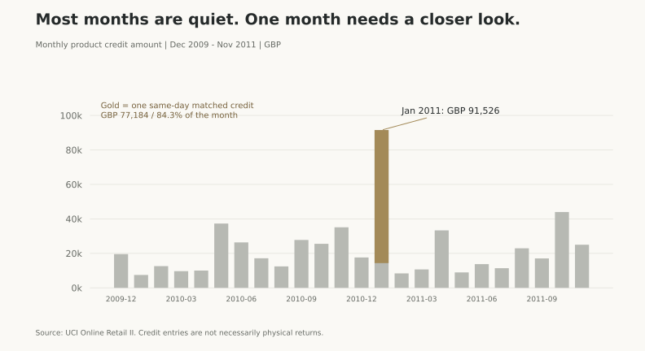
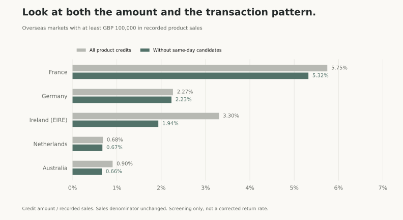
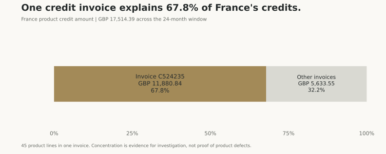
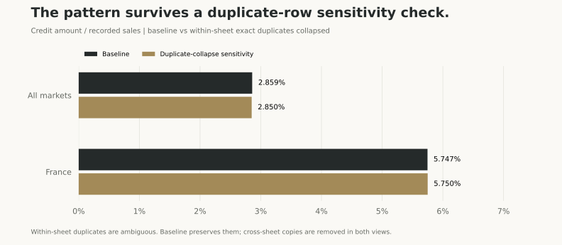

취소가 많은 국가,
정말 판매 방식부터 바꿔야 할까요?
영국 온라인 판매업체의 약 107만 행을 정리하고, 국가별 취소 기록을 비교했습니다. 눈에 띄는 비율을 그대로 믿기보다 그 안의 거래를 다시 확인한 분석입니다.
프랑스의 상품 취소금액 비중은 5.75%로 높았습니다. 그런데 프랑스 취소금액의 67.8%가 한 전표에 모여 있었습니다.
따라서 제안하는 첫 행동은 국가 전체의 판매 정책을 바꾸는 것이 아니라, 45개 상품이 함께 취소된 이 거래의 사유와 원거래를 먼저 확인하는 것입니다.
많은 기록 중, 무엇부터 확인해야 할까?
여러 국가에 물건을 판매하는 회사는 매달 판매와 취소 자료를 정리합니다. 어떤 국가에서 취소가 많으면 판매 방식, 배송, 상품 품질을 점검할 수 있습니다. 하지만 취소가 많아 보인다는 이유만으로 원인까지 알 수 있는 것은 아닙니다.
한 건의 큰 주문이 취소됐을 수도 있고, 여러 작은 주문에서 반복적으로 문제가 생겼을 수도 있습니다. 두 상황에 필요한 대응은 다릅니다.
① 판매·취소 자료를 중복 없이 집계할 수 있을까?
② 규모가 있는 해외 마켓 중 어디를 먼저 살펴봐야 할까?
③ 그 마켓의 높은 취소 비중은 여러 거래의 공통 문제일까, 특정 거래에 집중된 현상일까?
이 질문을 따라 자료 검증 → 월별 집계 → 국가 비교 → 개별 전표 확인 → 점검 실행안을 만들었습니다. 실제 부서 협업이나 취소 감소 실험을 수행한 프로젝트는 아닙니다.
데이터부터 일상적인 말로 설명하면
사용한 자료는 UCI의 Online Retail II입니다. 영국의 온라인 판매업체가 2009년 12월 1일부터 2011년 12월 9일까지 기록한 실제 거래 자료입니다. 주로 선물용품을 판매했고, 도매 고객도 포함되어 있습니다.
특정 화장품 회사의 자료는 아닙니다. 이 프로젝트는 여러 시장의 거래를 정확히 정리하고 확인 순서를 정하는 분석 방식을 보여줍니다. 현재 시장 상황을 설명하는 자료로도 사용하지 않습니다.
한 주문에 컵, 접시, 수납함이 들어 있으면 여러 행이 생깁니다. 그래서 “100만 건의 주문”이라고 표현하지 않고 “약 107만 행의 거래 기록”이라고 설명합니다.
| 항목 | 뜻 |
|---|---|
| Invoice | 판매·취소 전표 번호. C로 시작하면 취소 표시 |
| StockCode / Description | 상품 코드 / 상품 이름 |
| Quantity / Price | 수량 / 한 개의 가격 |
| InvoiceDate | 기록된 날짜와 시간 |
| Customer ID | 고객 식별 번호. 일부 기록에는 없음 |
| Country | 고객의 국가·지역 |
모든 금액은 영국 파운드(£, GBP)입니다. 원화로 환산하지 않았습니다. 국가 이름이 프랑스라고 해서 그 거래를 유로로 기록한 것으로 해석하면 안 됩니다.
예를 들어 단가 £5인 상품 3개를 판매했다면 £15입니다. 같은 상품 1개를 취소했다면 −£5라는 기록이 생길 수 있습니다. 이 예는 계산법 설명용이며 분석 결과가 아닙니다.
‘취소금액 비중’과 ‘반품률’은 다릅니다
이번 분석에서는 C로 시작하는 전표 + 음수 수량 + 양수 단가를 만족하는 상품 기록을 취소로 분류했습니다. 취소에는 주문 변경·수정 등이 포함될 수 있으므로 이를 모두 물리적인 반품이라고 부르지 않습니다.
분모는 취소를 차감하기 전의 양수 판매금액입니다. 같은 기간의 판매와 취소를 비교하는 관리 지표이지, “판매한 상품 중 정확히 몇 %가 반품됐는지”를 추적한 비율은 아닙니다. 이전 기간 판매에 대한 취소도 들어올 수 있어 작은 표본에서는 100%를 넘을 수도 있습니다.
그림을 그리기 전에, 숫자가 맞는지부터
① 연도별 시트 사이에 겹친 행을 제거했습니다
원본의 두 시트는 2010년 12월 초 날짜가 겹칩니다. 단순히 붙이면 같은 거래를 두 번 셀 수 있습니다. 모든 원본 열이 같은 기록의 시트별 반복 횟수까지 비교하여 22,523행의 시트 간 복사본을 제거했습니다.
한 시트 안에서만 똑같이 반복된 행은 일단 남겼습니다. 실제로 같은 상품을 나누어 입력했을 가능성을 배제할 수 없기 때문입니다. 대신 뒤에서 이 행들을 합쳤을 때 결과가 달라지는지도 확인했습니다.
② 9일뿐인 마지막 달은 월별 비교에서 분리했습니다
2011년 12월은 9일까지의 자료뿐입니다. 이를 11월 전체와 비교하면 매출이 급감한 것처럼 보일 수 있습니다. 따라서 본문 결과는 2009년 12월부터 2011년 11월까지, 24개의 온전한 달을 기준으로 합니다. 마지막 달의 25,526행은 별도 기간으로 두었습니다.
- 1,067,371행두 시트의 원본
- −22,523행시트 간 복사본
- −25,526행마지막 부분 월 분리
- 1,019,322행24개월 검토 대상
③ 상품과 기타 기록을 구분했습니다
자료에는 상품뿐 아니라 배송·수수료·수동 조정처럼 보이는 코드도 있습니다. 상품별 비교에 이를 섞으면 “특정 상품의 취소”로 잘못 해석할 수 있습니다. 기본적으로 숫자 5자리와 선택적인 영문 접미사로 된 코드를 상품형 코드로 분류하고, 나머지 코드는 별도로 집계했습니다.
이 규칙은 공개자료에서 재현 가능한 작업용 분류입니다. 실제 회사에서 적용할 때는 상품마스터와 대조해야 합니다. 기타 코드라고 해서 모두 불필요하거나 잘못된 기록이라는 뜻은 아닙니다.
| 분류 | 행 수 | 금액 |
|---|---|---|
| 음수 단가 등 별도 검토 기록 | 5 | £-158,676.14 |
| 기타 코드 기록 | 5,807 | £95,986.84 |
| 상품 취소 기록 | 17,625 | £-545,529.58 |
| 상품 판매 기록 | 989,915 | £19,084,294.99 |
| 금액이 0인 기록 | 5,970 | £0.00 |
상품 판매는 £19,084,294.99, 상품 취소는 £545,529.58였습니다. 두 금액을 차감한 상품 기록 합계는 £18,538,765.41입니다. 이 값은 거래파일에서 계산한 합계이며 회사의 감사받은 순매출이나 이익과 같다고 주장하지 않습니다.
④ 고객 번호가 없다고 매출까지 지우지 않았습니다
상품 기록 중 고객 번호가 없는 행은 219,301행입니다. 이 행의 양수 판매금액은 £2,472,599.19, 전체 상품 판매의 약 13.0%입니다. 고객 번호가 없어도 국가·상품·수량·단가가 있으면 금액 집계는 가능하므로 포함했습니다. 다만 고객을 이용한 원거래 연결에는 사용할 수 없습니다.
⑤ 합계와 연결 규칙을 검증했습니다
- 분류별 행 수의 합이 24개월 전체 행 수와 일치하는지 확인했습니다.
- 국가별·월별 합계가 전체 상품 판매·취소 합계와 일치하는지 확인했습니다.
- 취소를 이전 판매와 연결할 때 미래 판매를 가져오거나 같은 수량을 두 번 사용하지 않도록 검사했습니다.
전체 평균 뒤에 숨어 있던 큰 거래
24개월 전체 상품 취소금액 비중은 2.86%입니다. 하지만 이 평균만 보면 특정 시기의 큰 움직임을 놓칠 수 있습니다.

2011년 1월: 한 건이 그달 취소금액의 84.3%
전표 C541433의 상품 금액은 £77,183.60였습니다. 같은 고객·상품·단가·수량의 같은 날 판매 기록과 연결되며, 1월 전체 취소금액의 84.3%에 해당합니다.
이것만으로 “입력 실수였다”고 확정할 수는 없습니다. 다만 차트의 급등을 곧바로 고객 불만이나 품질 악화로 해석하기 전에 전표를 확인해야 한다는 근거는 됩니다.
1월의 취소금액 비중은 약 13.62%에서 2.41%로 달라집니다. 이는 한 거래의 영향력을 확인하기 위한 민감도 계산이며, 공식 수치를 수정했다는 의미가 아닙니다.
해외 마켓을 비교할 때는 작은 분모도 조심했습니다
판매가 거의 없는 국가에서는 작은 취소 한 건으로도 비율이 크게 튈 수 있습니다. 그래서 영국을 제외하고 24개월 상품 판매금액이 £100,000 이상인 국가·지역을 우선 비교했습니다. 이 기준은 보편적인 정답이 아니라 이번 점검 범위를 정하기 위한 기준이며, 전체 국가 집계는 다운로드 자료에 남겼습니다.
| 마켓 | 판매금액 | 취소금액 | 취소금액 비중 | 당일 연결 후보 제외 |
|---|---|---|---|---|
| 아일랜드 (EIRE) | £616,654.96 | £20,370.90 | 3.30% | 1.94% |
| 프랑스 | £304,749.46 | £17,514.39 | 5.75% | 5.32% |
| 독일 | £376,823.50 | £8,536.02 | 2.27% | 2.23% |
| 네덜란드 | £538,047.04 | £3,677.98 | 0.68% | 0.67% |
| 호주 | £167,867.51 | £1,517.86 | 0.90% | 0.66% |

아일랜드는 취소금액 자체가 프랑스보다 크지만, 당일 연결 후보의 비중도 큽니다. 프랑스는 이 후보를 제외해도 비교 대상 중 비중이 가장 높아 다음 단계의 전표 확인 대상으로 선택했습니다. 여기까지는 “점검 순서”를 정한 것이지, 해당 국가가 잘못 운영된다는 판단은 아닙니다.
프랑스에서 실제로 무슨 기록이 있었을까?

프랑스의 전체 상품 취소금액은 £17,514.39입니다. 이 중 £11,880.84가 2010년 9월 28일의 전표 C524235에 모여 있습니다. 서로 다른 상품 45개를 한꺼번에 취소한 기록입니다.
2010.08.09 · 이전 판매 전표 518505
↓ 같은 고객·상품·단가의 기록 비교
2010.09.28 · 취소 전표 C524235
취소금액 중 £11,787.84는 이전 판매와 수량을 연결할 수 있었고, 나머지 £93.00는 이번 연결 규칙으로 설명되지 않았습니다.
원본에 “이 취소가 어느 판매를 취소했다”는 직접 연결 번호는 없습니다. 따라서 위 관계는 조건이 맞는 원거래 후보입니다. 배송 여부, 취소 사유, 환불 정산 자료가 없으므로 확정 연결이나 실제 반품 여부를 단정하지 않습니다.
제품의 문제라고 바로 결론 내리지 않은 이유
예를 들어 프랑스의 85184D 상품은 £1,653.12의 판매와 같은 금액의 취소가 기록되어 비중이 100%로 보입니다. 하지만 관측된 판매 전표가 한 건이고, 그 취소가 바로 위의 대규모 전표에 속합니다. 이를 보고 “이 상품은 품질이 나쁘다”거나 “판매를 중단해야 한다”고 말할 근거는 부족합니다.
프랑스 전체 판매금액을 그대로 두고 이 한 전표의 취소금액만 빼면 비중은 5.75% → 1.85%가 됩니다. 실제 개선 성과가 아니라, 한 건에 결론이 얼마나 민감한지 보여주는 계산입니다.
중복 처리 방식을 바꿔도 결론이 유지되는가?
기본 분석에서는 한 시트 안의 동일 행을 보존했습니다. 이번에는 반대로 동일 행을 하나만 남겨 다시 계산했습니다. 전체 비중은 2.859% → 2.850%, 프랑스 비중도 거의 같았습니다. 이 처리 선택 때문에 프랑스를 점검 대상으로 고른 것은 아니라는 점을 확인했습니다.

실행 과제는 ‘고액·다품목 취소 전표 점검’
이 분석을 실제 업무로 연결한다면, 우선 한 번에 여러 상품이 취소된 큰 전표를 원거래·사유와 대조하는 점검 체계를 제안하겠습니다. 시작 사례는 프랑스의 C524235입니다.
이 과제는 제품 가격이나 국가별 판매 정책을 바로 바꾸는 것보다, 현재 자료로 확인한 문제에 더 가깝습니다. 취소가 발생한 이유를 먼저 알아야 주문 수정, 배송 이슈, 품질 문제, 정산 오류 중 어떤 대응이 필요한지 선택할 수 있습니다.
- 원거래 확인: 마켓 운영·재무 담당자에게 원판매 전표와 취소 승인 문서, 취소 사유를 요청합니다. 연결되지 않은 £93도 함께 확인합니다.
- 배송·환불 확인: 물류·고객응대 담당자와 실제 출고·회수 여부를 확인하고, 재무 담당자와 환불·대변전표 처리를 대조합니다.
- 원인별 분류: 단순 주문 수정인지, 실제 반품인지, 가격·할인 정산인지 등을 구분합니다. 원인 미확인 건은 임의로 분류하지 않습니다.
- 월별 점검표 운영: 취소금액, 상품 종류 수, 담당자, 원거래 연결 여부, 사유, 해결 상태를 한 표로 관리하도록 설계합니다.
진행한다면 이렇게 일정과 결과물을 관리합니다
| 단계 | 할 일 | 남길 결과물 |
|---|---|---|
| 1주차 | 점검 대상·지표 정의 합의 | 지표 설명서와 우선 전표 목록 |
| 2주차 | 원거래·배송·취소 사유 확인 | 증빙과 미해결 질문 목록 |
| 3주차 | 원인별 대응안 정리 | 담당자·기한이 있는 실행표 |
| 4주차 | 소규모 적용 여부·확인 기준 합의 | 점검 결과와 다음 달 체크리스트 |
확인할 지표: 취소 사유가 확인된 금액 비중, 원거래 연결 완료 비중, 미해결 전표 수, 확인 소요 일수입니다. 실제 운영 데이터가 없으므로 이 지표들의 개선값이나 목표 달성 여부는 만들어 넣지 않았습니다.
글로벌 마켓 공유용 영문 요약 예시
France recorded GBP 17,514.39 in product credits over the analysis window. A single credit invoice, C524235, accounts for 67.8% of that amount and covers 45 product codes. Before changing market or product policy, we recommend reviewing the original order, credit reason, shipment status and settlement records. Transaction matching suggests a prior-sale relationship, but the dataset does not provide an explicit original-invoice reference. This is an investigation priority, not evidence of a product-quality issue or a proven financial loss.
이 실행 일정과 영문 메모는 분석 결과에 기반한 제안입니다. 실제 회사와 협업하거나 개선안을 실행한 경험으로 표시하지 않습니다.
확실히 말할 수 있는 것과 없는 것
- 말할 수 있는 것: 기록된 판매·취소의 규모, 집중도, 기간별 변화와 조건이 맞는 원거래 후보입니다.
- 말할 수 없는 것: 취소의 진짜 사유, 상품 불량 여부, 실제 손실, 마켓별 이익률 또는 개선 실행의 효과입니다. 원가·물류·환불 자료가 없기 때문입니다.
- 원거래 연결의 한계: 같은 고객·국가·상품·단가를 기준으로 이전 판매 중 최근 기록부터 수량을 배정했습니다. 같은 시각의 판매도 후보로 인정합니다. 다른 배정 순서라면 당일 연결 비중이 달라질 수 있습니다.
- 연결되지 않는 금액: £54,843.16입니다. 고객 번호 누락, 관측 시작 전 판매, 가격 변경 등이 원인일 수 있으므로 곧바로 오류로 처리하지 않습니다.
- 기간·사업의 한계: 오래된 영국 선물용품·도매 혼합 자료입니다. 화장품 시장이나 현재의 국가별 소비 성향으로 일반화하지 않습니다.
원본 자료 점검, 중복·기간·상품 분류 규칙, 재현 가능한 Python 집계, 원거래 후보 연결, 민감도 확인, 네 개의 시각화, 점검 실행 제안과 공개 보고서입니다.
핵심은 높은 취소 비중을 발견하는 데서 멈추지 않고, 지표의 정의와 자료를 다시 확인해 실제로 점검할 거래까지 좁혔다는 점입니다.
숫자와 코드를 직접 확인할 수 있도록
집계 파일에는 고객 ID를 포함하지 않았습니다. 원본은 공식 출처에서 받을 수 있고, 아래 코드는 같은 자료로 분석을 재현하는 데 사용할 수 있습니다.
- 월별 판매·취소 집계 CSV ↓
- 전체 국가·지역 집계 CSV ↓
- 국가 × 상품 집계 CSV ↓
- 자료 분류·대사표 CSV ↓
- 분석 결과·출처 JSON ↓
- 분석 Python 코드 ↓
- 분류·연결 함수 코드 ↓
- 차트 제작 Python 코드 ↓
- 연결 규칙 검증 코드 ↓
- 상품 지표에서 분리한 코드 CSV ↓
분석을 재현하는 순서
- 아래 공식 UCI 페이지에서 원본 ZIP을 받아 압축을 해제합니다.
- 프로젝트 폴더의
data/raw/online_retail_II.xlsx에 원본을 둡니다. - 다운로드한 코드를
scripts/폴더에 함께 둡니다. - Python 환경에서 아래 명령을 순서대로 실행합니다.
pip install -r scripts/requirements-retail.txt
python -m unittest discover -s scripts -p "test_retail_core.py"
python scripts/analyze_retail.py
python scripts/plot_retail.py분석 환경 requirements-retail.txt ↓
차트와 집계는 실행 결과에서 생성됩니다. 원본 파일의 SHA-256은 다음과 같습니다.
bcbe73b35f5b7babf197fb0cb983a11f5d9ff929078d4aa53d171b1f2df2e980자료: Chen, D. (2012). Online Retail II. UCI Machine Learning Repository. DOI: 10.24432/C5CG6D · 공식 데이터 페이지 · CC BY 4.0. 2026.11.14 내려받음. 원자료를 정제·분류·집계해 만든 표와 차트이며, 해당 데이터의 제공자가 분석 결론을 보증하는 것은 아닙니다.